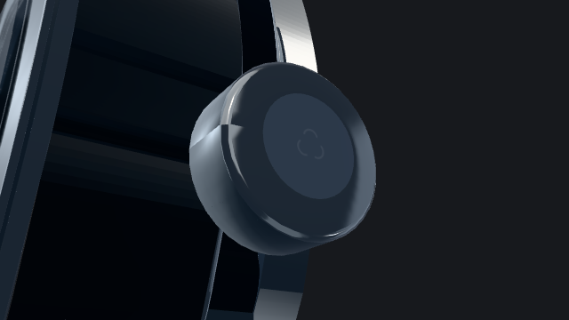
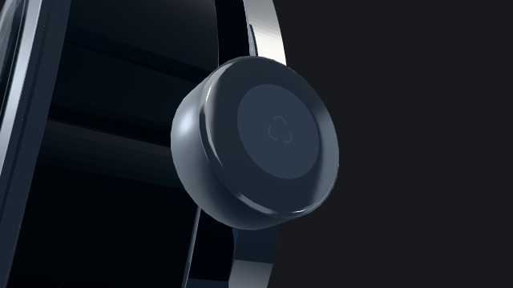

A closer look
Crown detail
Continuous shading around the crown, with its original shape and steel finish preserved.
Before & after
The same camera, light and moment in the orbit.


Middle view selected.
Original crown orbit
Repair notes
The duplicated vertices where the crown surface wraps around now share the same shading direction. The shape, texture coordinates and finish boundaries remain unchanged.
The verification compares the repaired construction with the same construction before the correction. It checks the seam, geometry and shading basis.